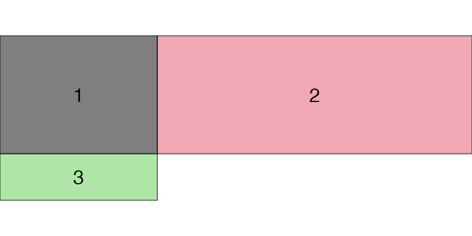

Arranging multiple grobs on a page
Baptiste Auguie
2022-12-11
arrangeGrob.rmdThe grid package provides low-level functions to create
graphical objects (grobs), and position them on a page in
specific viewports. The gtable package
introduced a higher-level layout scheme, arguably more amenable to
user-level interaction. With the arrangeGrob/grid.arrange()
pair of functions, gridExtra builds upon
gtable to arrange multiple grobs on a page.
Complex layouts
We can provide a matrix defining the layout,
lay <- rbind(c(1,1,1,2,3),
c(1,1,1,4,5),
c(6,7,8,9,9))
grid.arrange(grobs = gs, layout_matrix = lay)The layout itself may contain holes, but note that for any given grob index the region must be simply connected (no hole),
hlay <- rbind(c(1,1,NA,2,3),
c(1,1,NA,4,NA),
c(NA,7,8,9,NA))
select_grobs <- function(lay) {
id <- unique(c(t(lay)))
id[!is.na(id)]
}
grid.arrange(grobs=gs[select_grobs(hlay)], layout_matrix=hlay)All cells are of equal size by default, but users may pass explicity
widths and/or heights in any valid grid units,
or as relative numbers (interpreted as null),
grid.arrange(grobs=gs[1:3], ncol=2, widths = 1:2,
heights=unit(c(1,10), c("in", "mm")))
Nested layouts with arrangeGrob
The grid.arrange() function draws on the device; for
more complex layouts, we may want to store the gtable and combine it
with other objects, e.g. forming nested layouts. To this end, use
arrangeGrob(),
g1 <- arrangeGrob(grobs = gs, layout_matrix = t(lay))
g2 <- arrangeGrob(grobs = gs, layout_matrix = lay)
grid.arrange(g1, g2, ncol=2)Multiple pages output
Finally, we may want to place grobs on multiple pages; the
marrangeGrob() function provides a convenient interface for
this, also compatible with ggsave().